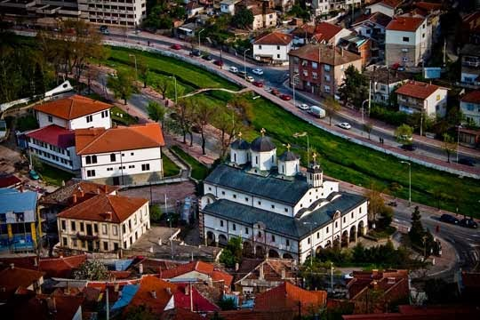
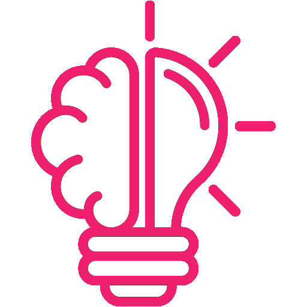

Education
2010-2019
Основно училиште „Тошо Арсов“ Штип (завршено со одличен успех)2019-2023
Средно училиште Гимназија „Славчо Стојменски“ Штип Насока: Општествено хуманистичко подрачје (завршено со одличен успех)2023- сега
Факултет за информатички науки и компјутерско инженерствоНасока: Софтверско инженерство и информациски системи
Biography
Датум на раѓање 22/04/2004
Националност Македонска
Родена сум во Штип, РС Македонија. 

Skills
- Комуникациски вештини
одлични комуникациски вештини стекнати од посетувани предавања со наслови communication and speaking skills.
Македонски јазик - мајчин јазик
Англиски јазик: C1
Германски јазик: B2
- Компјутерски вештини
Одлично познавање на алатките од MS Office пакетотпакетот
Одлично владее со програмскиот јазик C++
Активно користам интернет, електронска пошта
- Креативност
- Одговорност
- Добар организатор